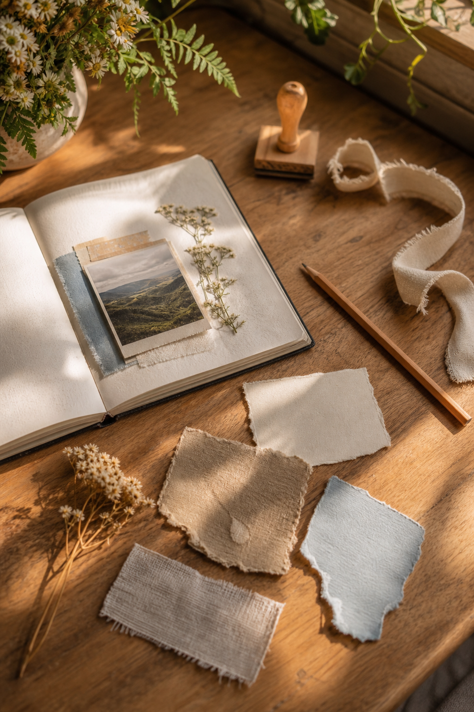
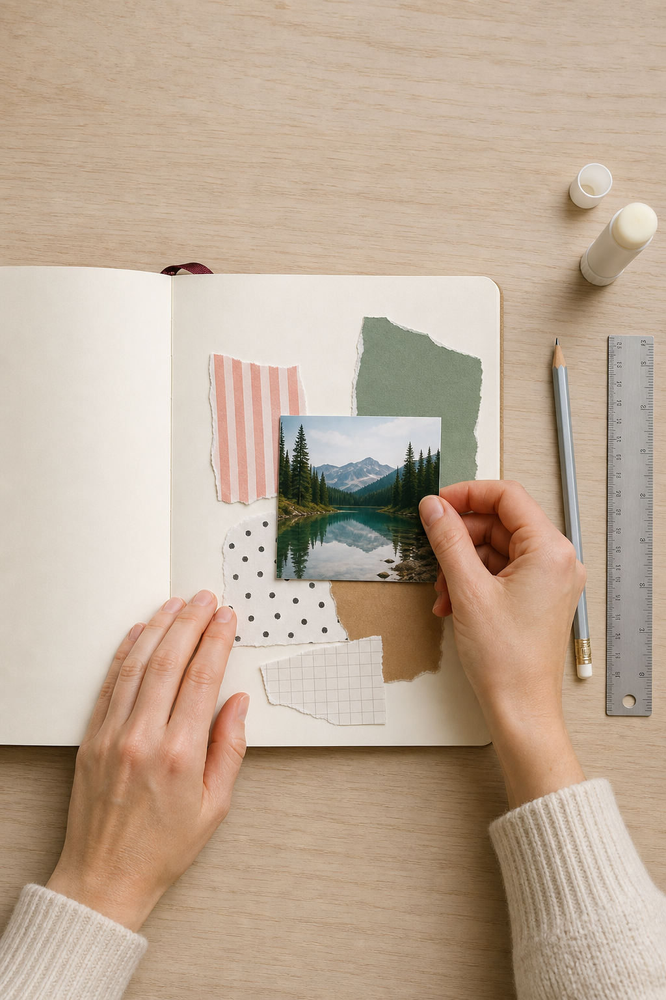

One meaningful photograph can carry an entire scrapbook page. The trick is not to surround it with everything you own. Five carefully chosen scraps create enough rhythm, color, and texture while leaving the photograph room to matter.

Choose scraps by role, not by pattern
Select one large quiet scrap, one medium colored scrap, one narrow patterned strip, one small dark piece, and one tiny accent. They do not have to match perfectly. They only need one shared quality—a repeated color, similar softness, or the same aged paper tone.
Begin slightly away from the center
Place the photograph a little above or below the page’s midpoint. A perfectly centered photo can feel formal; a small shift creates movement and opens a natural space for journaling. Put the large quiet scrap behind it as a mat, allowing two or three uneven edges to show.
Build an invisible triangle
Add the medium colored scrap beneath one corner of the photograph. Place the small dark piece farther away, then use the tiny accent at a third point. These three notes form an invisible triangle. The eye travels around it and returns to the photograph.

Use the strip to create direction
Tuck the narrow strip behind the photograph so it points toward the subject or toward the place where you will write. A striped, ruled, or textural strip is especially useful because its lines act like an arrow. Avoid running it from edge to edge; a shorter piece feels more integrated.
Protect the breathing room
Before adding anything else, look for the largest untouched area. Keep most of it empty. White space is not unfinished space—it gives the photograph emphasis and makes small details visible. If the page feels scattered, move the pieces closer together before adding a sixth scrap.
Add the memory after the design
Write two or three sentences: where you were, what happened just before the photograph, and one sensory detail you still remember. A date and place can sit near the photograph, while the fuller note can hide under a hinged scrap or small tuck. The result is decorative, but it is also an archive.
A reliable final check
Squint at the page. The photograph should be the clearest shape, the dark scrap should anchor rather than dominate, and the accent should be the smallest bright note. If two pieces compete, trim or turn one over. Often the plain reverse side is exactly what the layout needs.
Disclosure: The styled workspace and process photographs in this article were created with AI-assisted image tools and art-directed for this lesson.